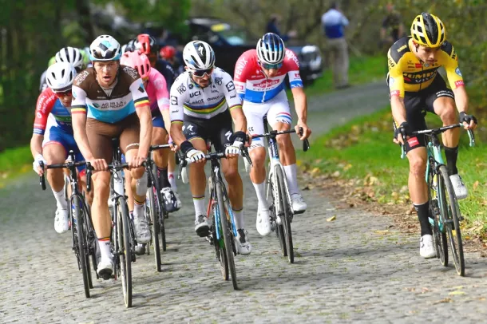

Latest on cyclingnews-Road
From Omloop to Liege via San Remo and Roubaix,an in depth look at the biggest men s races of spring

The Spring Classics:The definitive guide
The spring Classics are a set of major one-day races that take place across Northern Europe. With some of the sport's oldest and most iconic events among their number, they are deeply enshrined in cycling history and heritage. They kick off in late February with Omloop Het Nieuwsblad and Kuurne-Brussel-Kuurne before turning towards Milan-San Remo, Gent-Wevelgem, the Tour of Flanders, and Paris-Roubaix, with several other less prestigious races nestled among them. After a brief lull the focus shifts to a set of spring Classics that are collectively known as the Ardennes Classics. These comprise of Amstel Gold Race, La Flèche Wallonne and Liège-Bastogne-Liège. Each race has its own charm and characteristics with the pavé or cobbles of Paris-Roubaix and the bergs of Flanders defining elements for two of the most significant races. Paris-Roubaix, the Tour of Flanders, Milan-San Remo and Liège-Bastogne-Liège have Monument status – a tag dedicated to the most prestigious cycling one-day races. The fifth and final Monument in cycling is ll Lombardia, which takes place in the autumn. This weekend sees the start of the Spring campaign with Omloop Het Nieuwsblad and Kuurne-Brussel-Kuurne raising the curtain with what is traditionally known as the 'Opening Weekend’. Cyclingnews will have complete live coverage from both races, along with news, reports and race analysis as well as 'how to watch' guides. If you live outside a broadcast zone or are on holiday outside your country and find that the live streams to be geo-restricted, you can get around this by getting access to them by simulating being back in your home country via a 'virtual private network', or VPN, for your laptop, tablet or mobile. Our sister site TechRadar tested hundreds of VPNs and recommends the number-one VPN currently available as ExpressVPN. With ExpressVPN, you can watch on many devices at once including Smart TVs, Fire TV Stick, PC, Mac, iPhone, Android phone, iPads, tablets, etc.